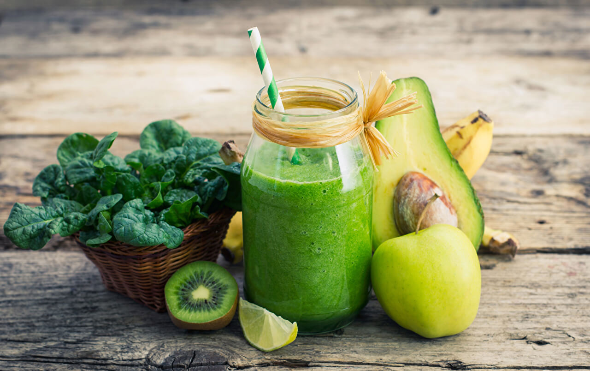

Descubrí increíbles recetas y cambiá tu alimentación!
Introducción
Vida Verde es un sitio virtual en donde te invitamos a cambiar tu alimentación, tu manera de vivir, a descubrir un nuevo mundo, el mundo de los jugos verdes! que no siempre son tan verdes.
En este sitio te vamos a mostrar varias combinaciones y posibilidades para que puedas implementar en tus jugos verdes/licuados.
La ingesta de frutas y verduras está asosiada con la disminución de la inflamación corporal, del estrés, de enfermedades cardiovasculares y de algunos tipos de cáncer. También con la pérdida de peso y con un mejor funcionamiento de nuestro sistema inmunológico. Por eso, no da lo mismo lo que comés, SOMOS LO QUE COMEMOS!
Como Preparar tus Elixires
Cómo lavar y cuando pelar
- Una buena idea para lavar tus vegetales es dejarlos unos veinte minutos en remojo con un buen chorro de vinagre o jugo de limón para matar bichitos que se ven y otros mas chiquitos que ni siquiera vemos. Después los enjuagas con agua del filtro y ya estarian listos para usar!
- Una vez que remojaste en vinagre y las lavaste, secalas bien y guardalas en boslas herméticas envueltas en rollos de papel para que absorva la humedad, les sacas bien el aire y las llevas a la heladera. Siempre que abras una bolsa recordá sacarle el aire de nuevo antes de guardarla, y si el papel está mojado, lo cambiás.
- Las remolachas hay que pelarlas para sacarle el gusto a tierra en el jugo. Con las zanahorias pasa lo mismo, pero si son orgánicas con que les pases un cepillo alcanza y podés comerlas con todo.
- A las naranjas, las limas, los limones y los pomelos, trata de pelarlos dejándoles la capa blanca, el pellejo, porque ahí se encuentran muchos de los nutrientes. también conviene sacarles las semillas.
- El ananá, el melón, la sandía y el kiwi se pelan antes de poner en la juguera.
- Los ingredientes de tus elixires conviene que los cortes con un cuchillo de cerámica, para que no se oxiden los nutrientres. Una vez hecho tus elixires, revolvelos con una cuchara de madera o de plástico, por la misma razón.
Acerca de tus ingredientes
- Si necesitás, podés endulzar tus preparados con stevia, miel de caña (es distinta a la de abeja), xilitol o dátiles. Ojalá que no! De apoco, vas a volver a sentir el dulce de la fruta.
- En cuanto a los superalimentos, te recuerdo que el aloe, las bayas de goji, la cúrcuma y el cacao los podés tomar en el momento del día que te den ganas.
- Los poderosos brotes no van en la juguera, pero si en la licuadora. Elegí los que más te gusten, menos los de soja.
- Una buena idea es tener siempre semillas de chía y lino en tu heladera activándose en un frasco, para que cuando prepares tus licuados ya tengas el mucílago formado. (duran de tres a cuatro días)
- Los frutos secos aportan mucha energía y aceites de muy buena calidad, incluidos aceites esenciales, como los omega.
Reemplazos
- Acelga: apio, espinaca, kale, rodicheta, rúcula.
- Agua de coco: agua.
- Albahaca: menta.
- Ananá: mango, naranja.
- Apio: acelga, hinojo, pepino.
- Arándanos: cerezas, frutillas, frambuesas, moras.
- Banana: carne de coco, durazno, mango, palta.
- Berro: rúcula.
- Brócoli: repollo.
- Cilantro: perejil.
- Ciruela: durazno, mango, pelón.
- Coco: palta, banana.
- Dátiles Medjool: néctar de coco
- Kale: acelga, brócoli, espinaca, repollo, rúcula.
- Kiwi: manzana, pera, uva
- Limón: lima.
- Mango: ananá, banana, ciruela, duranzo, pelón
- Manzana: kiwi, pera.
- Melón: sandía.
- Naranja: ananá, pomelo.
- Palta: pulpa de coco, o banana para lograr la consistencia cremosa, frutos secos, leches o mantecas de frutos secos para reemplazar una grasa por otra.
- Pepino: apio, zucchini.
- Pomelo: naranja.
- Remolacha: zanahoria
- Rúcula: acelga, berro, espinaca, kale, rodicheta.
- Uva: manzana, pera, kiwi.
- Zucchini: pepino.